Loongson LA464 微架构评测¶
背景¶
之前分析的大多是国外的微架构，龙芯的却一直没怎么研究过。既然 LA864 快要来了，那就赶在它之前分析一下 LA464 和 LA664，也为 Unofficial LoongArch Software Optimization Guide 积攒数据。测试环境是 3C5000 @ 2.2GHz。
官方信息¶
Loongson 公开的 LA464 微架构官方信息如下：
- 龙芯 3A5000 产品页：2.3GHz-2.5GHz，160GFlops，4 核，典型功耗 35W@2.5GHz
- 龙芯 3C5000 产品页：16 核 LA464，2.0GHz-2.2GHz，560GFlops@2.2GHz
- 龙芯 3A5000 发布报道：4 个定点单元、2 个 256 位向量运算单元和 2 个访存单元
- 3A5000/3B5000 用户手册（英文版）LA464 章节
- 龙芯官网下载中心：《龙芯 3A5000/3B5000 处理器数据手册》《龙芯 3A5000/3B5000 处理器寄存器使用手册》（第 8 章为 LA464 处理器核）
2023 年的龙芯产品发布暨用户大会上，胡伟武在介绍 LA664 的同时，也给出了 LA464 的微架构参数：
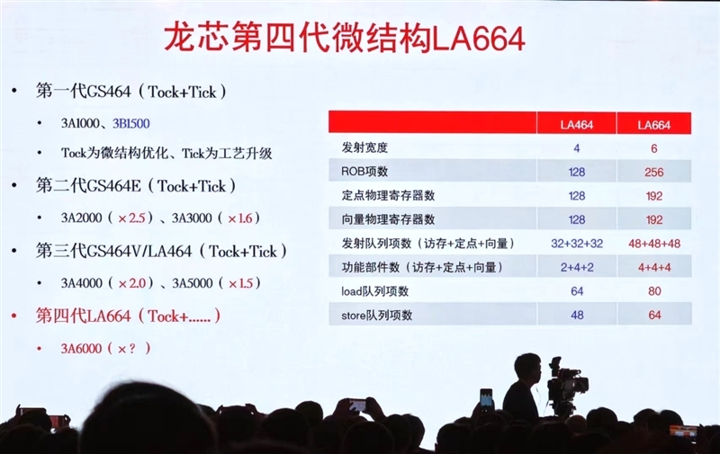
（图片来源：快科技 2023-11-29 现场报道）
其中 LA464 的官方参数如下：
| 参数 | LA464 |
|---|---|
| 发射宽度 | 4 |
| ROB 项数 | 128 |
| 定点物理寄存器数 | 128 |
| 向量物理寄存器数 | 128 |
| 发射队列项数（访存+定点+向量） | 32+32+32 |
| 功能部件数（访存+定点+向量） | 2+4+2 |
| load 队列项数 | 64 |
| store 队列项数 | 48 |
手册给出的其他细节：
- 四发射超标量结构，4 个定点、2 个向量、2 个访存部件
- 每个向量部件 256 位宽，最多支持 8 个单精度或 4 个双精度乘加运算
- 访存部件支持 256 位访问，虚地址 64 位、物理地址 48 位
- 64 项全相联外加 8 路组相联 2048 项，共 2112 项 TLB，另有 64 项指令 TLB，支持可变页大小
- L1I 和 L1D 各 64KB，4 路组相联；256KB Victim Cache 作为私有二级 Cache，16 路组相联
- 支持 Non-blocking 访问与 Load-Speculation 等访存优化技术；L1 Cache 奇偶校验，L2 和末级 Cache ECC 校验
官方手册给出的 LA464 结构如下图所示：4 条译码通路（Decode bus 上的 4 inst）、4 个定点 ALU、2 个 256 位向量单元 VAL1/VAL2，以及 2 个地址生成单元 AGU1/AGU2。
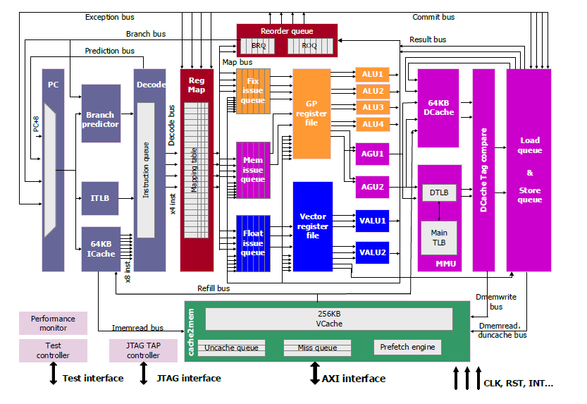
整个 3A5000 芯片的结构如下：
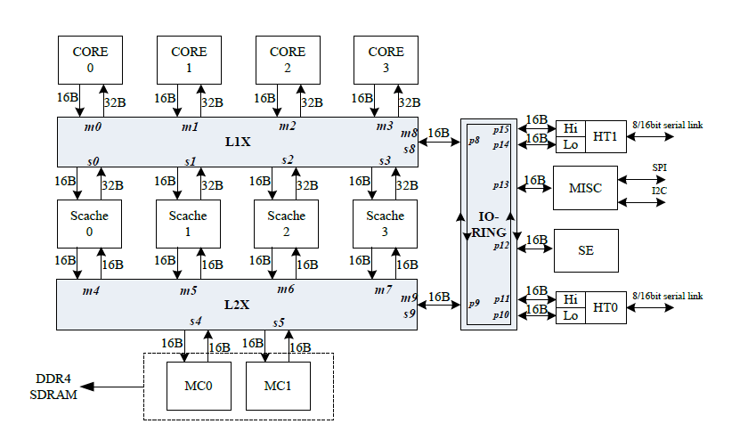
现有评测¶
网上已有不少针对 LA464 微架构的评测和分析，建议阅读：
下面按模块分别记录官方信息与实测结果。读者可以对照已有的第三方评测理解。官方信息与实测结果一致的数据会加粗。
Benchmark¶
Loongson LA464 的性能测试结果见 SPEC。
前端¶
Fetch¶
官方信息：取指宽度为 8。
为了测出实际的取指宽度，我参考 如何测量真正的取指带宽（I-fetch width） - JamesAslan 构造了测试。
原理是：取指跨页时，相邻两个页可能映射到不同的物理地址；若要在一个周期内完成跨页取指，就得查询两次 ITLB，或者让 ITLB 把相邻两页的映射放在一起。这种场景比较少见，处理器一般不会专门优化，但也不是没有。实测把循环放在两个页的边界上，LA464 遇到跨页取指时确实会拆成两个周期。
在此基础上构造一个循环：第一条指令放在第一个页的最后四个字节，其余指令放在第二个页。这样每次循环的取指时间等于一个周期（取第一个页内的指令）加上第二个页内指令所需的取指周期数；多出来的这一个周期，正好可以把取指宽度从后端限制中分离出来。实验结果如下：
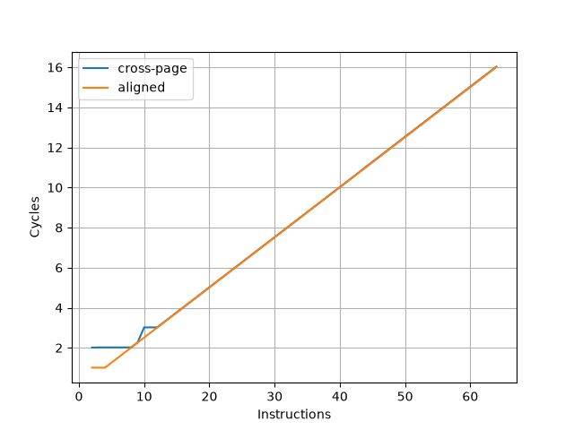
图中蓝线（cross-page）即上述第一条指令在第一个页、其余指令在第二个页的情况；横坐标是第二个页内的指令数，因此一次循环的指令数为横坐标 +1。纵坐标是多次循环的总周期数除以循环次数，即平均每次循环耗费的周期数。当循环指令数达到 9 条时，曲线多出一个周期，说明第二个页里的 8 条指令只需一个周期，即每个周期取 8 条指令。
Chips and Cheese 认为这是 16 B/cycle，但我认为应该是 32 B/cycle。他们应该没有实际测量，只是根据发射宽度推测。
为了确认瓶颈确实在取指，又构造了一组把所有指令放进同一个页内的实验，此时取指不再是瓶颈（图中 aligned）。两条曲线的对比可以清楚地支持上述结论。
指令数继续增加后，瓶颈转移到每周期能执行的 NOP 数量上，两条线随之重合。
Decode¶
官方信息：译码宽度为 4。
L1 ITLB¶
官方信息：64 项指令 TLB。
构造一系列 B 指令，让它们分布在不同的页上，使 ITLB 成为瓶颈，在 LA464 上测试：
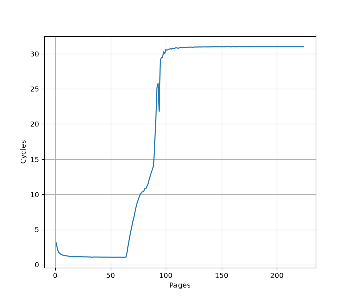
在 64 个页时，CPI 从 1 快速上升，对应 64 项的 L1 ITLB 容量。
L1 ICache¶
官方信息：64KB，4 路组相联。
为了测 L1 ICache 容量，构造了一个指令 footprint 很大的循环：循环体由大量 4 字节 NOP 和末尾一条分支指令组成，观察不同 footprint 下的 IPC：
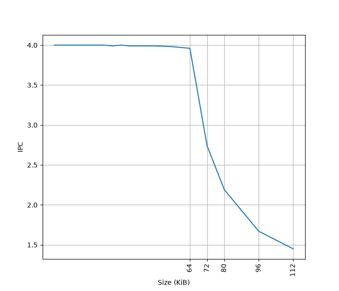
footprint 小于 64 KB 时 IPC 可以达到 4，之后开始下降，这个 64 KB 就对应 L1 ICache 的容量。
footprint 超出 L1 ICache、进入 L2 范围后，IPC 下降比较明显；看起来要么没有指令预取器，要么预取器没有针对这种大量 NOP 的场景做适配。
Return Stack¶
构造不同深度的调用链，测量每次调用的平均耗时，在 LA464 上得到下图：
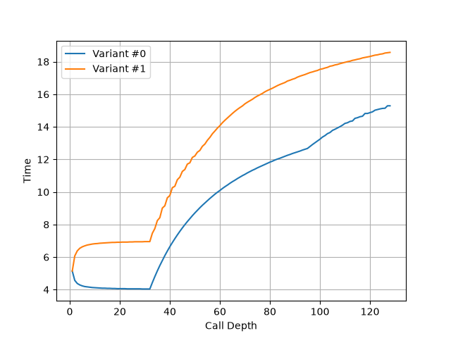
调用链深度到 32 时性能突然变差，因此 LA464 的 Return Stack 深度为 32，与 Chips and Cheese 的结果一致。
BTB¶
构造大量无条件分支指令（B 指令）。BTB 需要记录这些分支的目的地址，因此分支数量超过 BTB 容量后，性能会明显下降。把 B 指令紧密放置，即每 4 字节一条时：
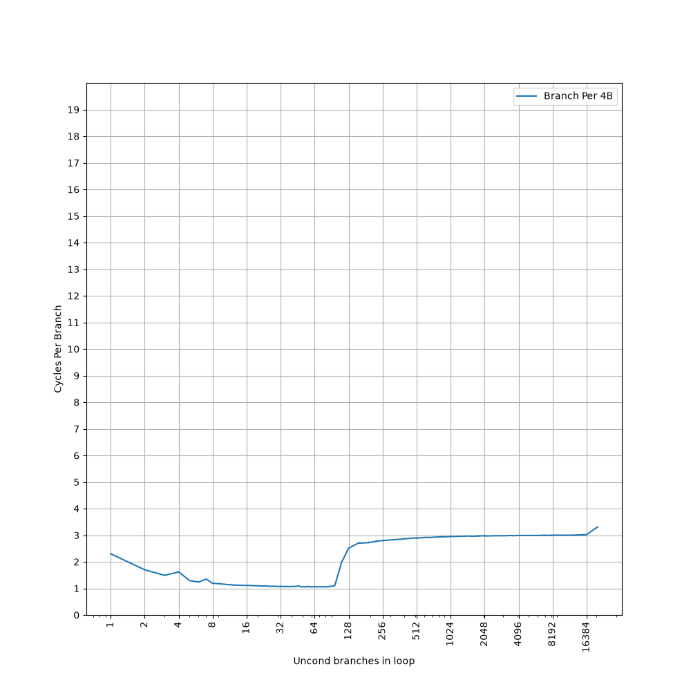
分支数在 96 以内时 CPI 可以达到 1；超过 96 后出现 CPI 为 3 的平台，说明 BTB 容量是 96。
超出 BTB 容量后，分支预测阶段无法从 BTB 获知哪些指令是分支，只能等到取指甚至译码后才发现，由此带来性能损失，这就是 CPI 为 3 的来源。第二个拐点在 16384，对应的是指令 footprint 超出 L1 ICache 的情况：64KB 按每 4 字节一条 B 指令计算，最多容纳 16384 条。
把分支间距增大到 8B：
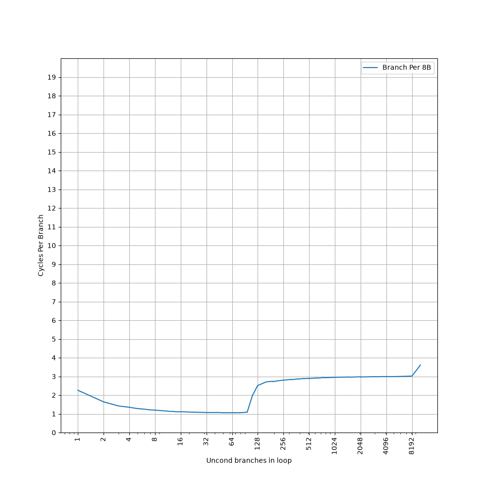
BTB 容量不变，仍为 96；第二个拐点提前到 8K，同样对应 64KB 的 L1 ICache，说明它的 BTB 是全相联的。
Chips and Cheese 测得的是 64 项，估计他们只测了 2 的幂次，看到 64 条分支快、128 条慢就下了结论；实际应该是 96 项。
后端¶
Register File¶
官方信息：定点物理寄存器 128 项、向量物理寄存器 128 项。
为了测物理寄存器堆的大小，在开头和结尾各放一个依赖链很长的操作，中间填入若干无关指令来消耗物理寄存器条目，结果见下图：
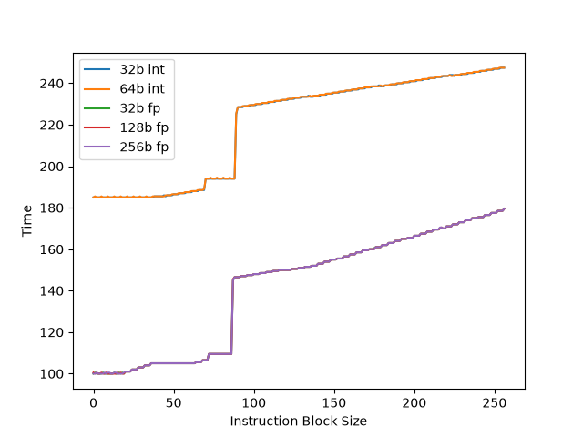
- 32b/64b int：测试 speculative 32/64 位整数寄存器的数量，拐点在 88
- 32b/128b/256b fp/vec：测试 speculative 32/128/256 位浮点或向量寄存器的数量，拐点在 86
加上大约 32 个架构寄存器，以及其他可能需要 rename 的寄存器，基本能对上 128 这个数字。
Execution Units¶
官方信息：4 个定点、2 个向量、2 个访存功能部件。每个向量部件 256 位宽，最多支持 8 个单精度或 4 个双精度乘加运算。
实测这些指令的吞吐如下：
- 分支指令如 beq 每周期一条
- ALU 指令如 add.d 每周期四条
- 向量指令如 vadd.d 每周期两条
- ld.d 每周期两条
- st.d 每周期一条
- xvfmadd.d 和 xvfmadd.s 都是每周期两条，对应每周期 8 个双精度 FMA 和 16 个单精度 FMA
延迟如下：
- mul: 4
- fadd/vfadd/xvfadd/fmul/vfmul/xvfmul/fmadd/vfmadd/xvfmadd: 5
Chips and Cheese 对 FMA 吞吐的分析有误：每周期确实可以执行两条 256b FMA。
Scheduler¶
官方信息：发射队列分为访存、定点、向量三类，每类 32 项。
在开头放一串长延迟指令（一串 fsqrt.d），让后面的访存、定点或浮点指令依赖它，末尾再放一串长延迟指令，以此测试发射队列深度，结果如下：
- 访存：ldx.d 到 29 条时队列满；考虑到前面的 ftintrz.l.d 和 movfr2gr.d 可能也会走访存队列，与官方信息中的 32 项基本吻合
- 定点：add.d 到 32 条整数指令（movfr2gr.d、beq、ftintrz.l.d、movfr2gr.d、slli.d 以及多条 add.d）时队列满，与官方信息吻合
- 浮点：fadd.d 也差不多在 32 条时队列满
LSU¶
官方信息：访存部件支持 256 位存储访问，虚地址 64 位、物理地址 48 位；load 队列 64 项、store 队列 48 项；支持 Non-blocking 访问和 Load-Speculation。
Load/Store Queue¶
引入一系列 load/store 指令，让它们阻塞在队列里，以此测试队列深度：
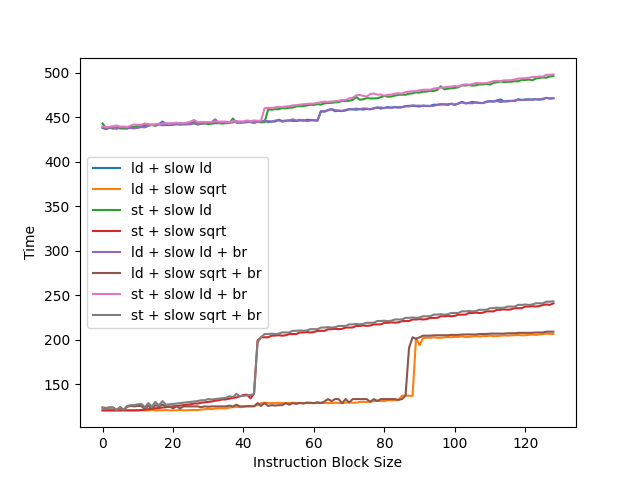
Load 的拐点在 64，Store 的拐点在 48；80+ 处的拐点来自整数寄存器堆。
Chips and Cheese 测得 Store Queue 为 44 项，差别不大。
Load Store 带宽¶
实测 LA464 每周期可以完成以下访存操作：
- 2x 32b/64b/128b/256b Load
- 1x 32b/64b/128b/256b Store
- 1x 64b Load + 1x 64b Store: 1 cycle
- 1x 128b Load + 1x 128b Store: 1 cycle
- 1x 256b Load + 1x 256b Store: 1 cycle
即每周期可读 64 字节、写 32 字节，或读写各 32 字节。
Store to Load Forwarding¶
实测 LA464 在以下情况下可以成功转发。设 Store 地址为 x、Load 地址为 y，转发成功时 y-x 的取值范围如下：
| Store\Load | 8b Load | 16b Load | 32b Load | 64b Load |
|---|---|---|---|---|
| 8b Store | {0} | {} | {} | {} |
| 16b Store | [0,1] | {0} | {} | {} |
| 32b Store | [0,3] | [0,2] | {0} | {} |
| 64b Store | [0,7] | [0,6] | [0,4] | {0} |
成功转发的条件：Store 的范围完全覆盖 Load，且不跨越缓存行边界；一个 Load 不能从多个 Store 转发数据。这一条件与 AMD Zen5 相同。
当 Load 与 Store 不重叠、且不在同一个对齐的 8B 内时，可以同时完成，只需一个周期；若在同一个对齐的 8B 内但不重叠，则退化为串行执行，需要两个周期；若两者重叠且转发成功，需要七个周期；若重叠但转发失败、且没有跨越缓存行，则需要 14 个周期。
重叠时，即使跨越了对齐的 8B，只要不跨越缓存行边界，仍然可以成功转发；一旦跨越缓存行，转发失败，退化到 22 个周期。
L1 DCache¶
官方信息：64KB，4 路组相联。
用不同 footprint 的随机 pointer chasing load 测试性能，得到下图：
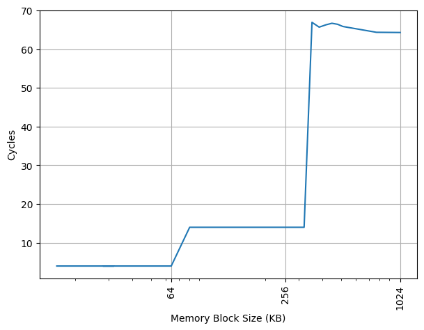
64KB 处出现明显拐点：命中 L1 DCache 时 load to use latency 为 4 cycle，命中 L2 时增大到 14 cycle。
L1 DTLB¶
官方信息：64 项全相联。
用不同 footprint 的随机 pointer chasing load，且每次 load 落在单独的页内，测试性能，得到下图：
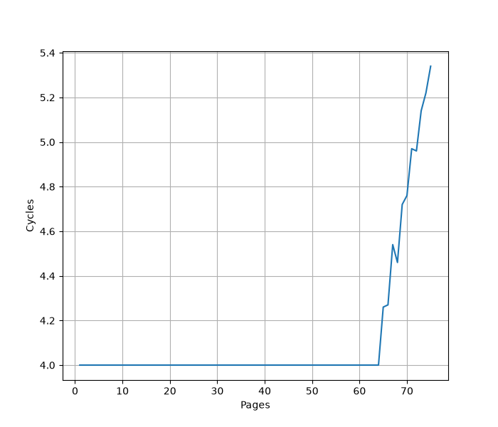
64 页处出现明显拐点；命中 L1 DTLB 时 load to use latency 为 4 cycle。
L2 TLB¶
官方信息：2048 项为 8 路组相联，支持可变页大小。
使用 footprint 更大的随机 pointer chasing load，每次 load 仍落在单独的页内，得到下图：
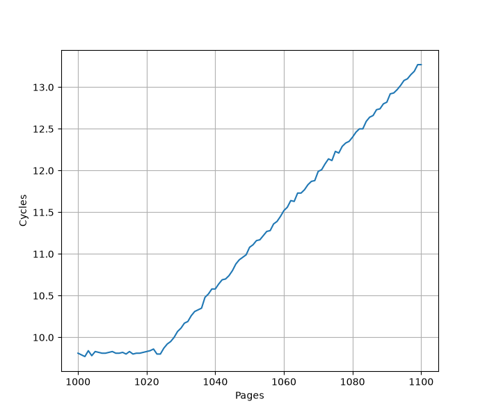
1024 页处出现明显拐点，说明这个核只能用数据填满一半的 L2 TLB 容量。
L2 Cache¶
官方信息：256KB Victim Cache，16 路组相联，每核私有。
用不同 footprint 的随机 pointer chasing load 测试性能，得到下图：
命中 L2 时延迟为 14 cycle；直到 320KB 才出现新的拐点，而 320KB 正好是 L1 DCache 的 64KB 与 L2 Cache 的 256KB 之和。
L3 Cache¶
官方信息：3A5000 的 L3 为 16MB，3C5000 的 L3 为 32MB。
使用 footprint 更大的随机 pointer chasing load 测试性能：
按时间计：
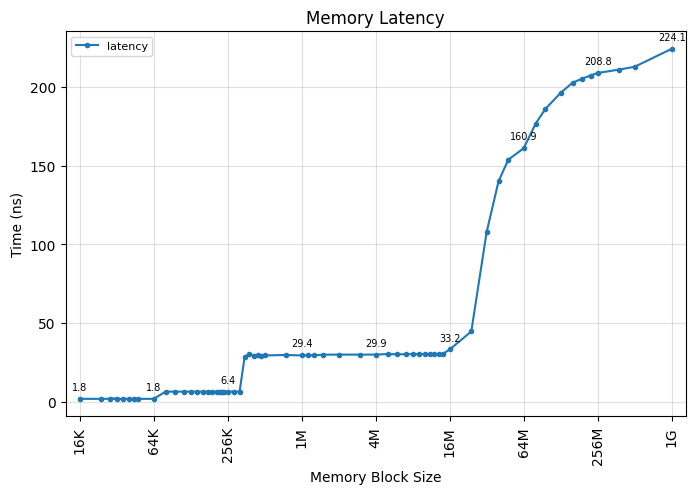
按周期计：
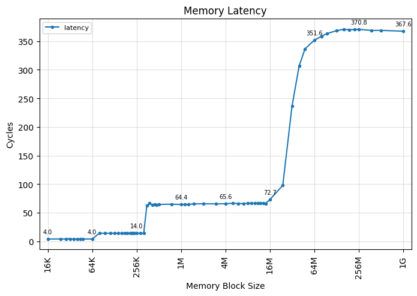
3C5000 的 L3 是 32MB，但延迟在更小的 footprint 下就开始上升。按官方信息，它的 L3 Cache 分为四个 partition，因此可能存在远近之分，或者每个核只能用到其中一部分 L3。
访存带宽¶
用 LASX 的 xvld/xvst 指令测试不同大小数组的访存带宽：
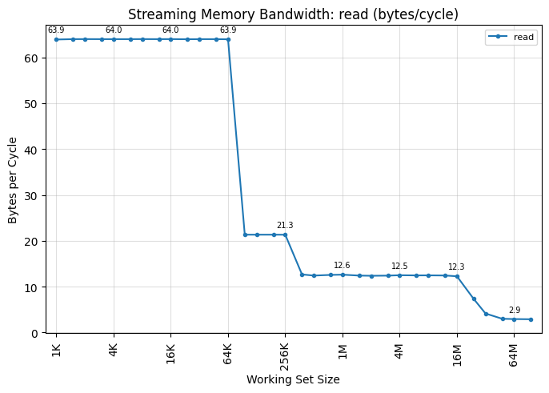
在 L1 范围内，Load 带宽打满 64B/cycle；到 L2 区间下降到 21B/cycle，到 L3 区间进一步降到 12B/cycle。
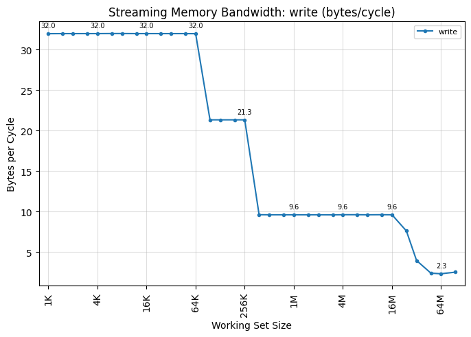
在 L1 范围内，Write 带宽打满 32B/cycle；到 L2 区间下降到 21B/cycle，到 L3 区间进一步降到 10B/cycle。
Prefetcher¶
官方信息：结构图中 L2（VCACHE）内有一个 Prefetch engine。
实测 LA464 确实带有预取器：
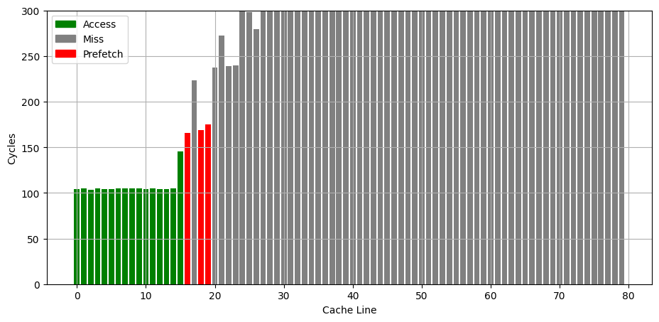
顺序访问 16 个 cacheline 后，第 16 个会落在 L2，之后的一部分 cacheline 也会被预取进 L2。
ReOrder Buffer¶
官方信息：ROB 128 项。
用两个长延迟的指令链，夹住若干条 NOP 指令，测试性能：
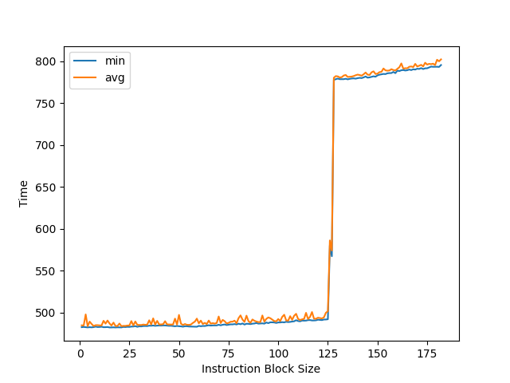
可见 ROB 大小为 128 项。